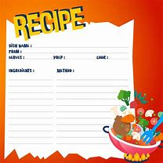

Description:
These classic chocolate chip cookies are soft, chewy, and loaded with gooey chocolate chips. Perfect for satisfying your
sweet tooth!
Ingredients:
- 1 cup (2 sticks) unsalted butter, softened
- 3/4 cup granulated sugar
- 3/4 cup brown sugar
- 2 large eggs
- 1 teaspoon vanilla extract
- 2 1/4 cups all-purpose flour
- 1 teaspoon baking soda
- /2 teaspoon salt
- 2 cups semisweet chocolate chips

Instructions:
- Preheat your oven to 350°F (175°C).
- In a large mixing bowl, cream together the softened butter, granulated sugar, and brown sugar until light and fluffy.
- Beat in the eggs one at a time, then stir in the vanilla extract.
- In a separate bowl, whisk together the flour, baking soda, and salt.
- Gradually add the dry ingredients to the butter mixture, mixing until well combined.
- Fold in the chocolate chips.
- Drop rounded tablespoons of dough onto ungreased baking sheets.
- Bake for 10-12 minutes or until golden brown around the edges.
- Let the cookies cool on the baking sheets for a few minutes before transferring them to wire racks to cool completely.